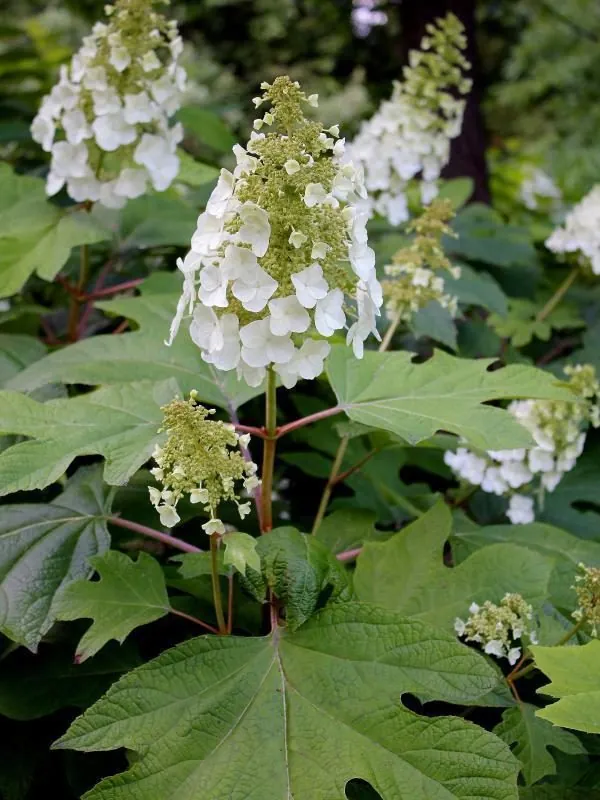

灌木与花木 · 植物界
栎叶绣球 Hydrangea quercifolia

绣球科绣球属落叶灌木，叶片形似栎树叶、秋日转为紫红，白色圆锥花序大型醒目，是优良的观叶观花灌木。
- 分类
- 门被子植物门纲木兰纲目山茱萸目科绣球科属绣球属
- 栖息环境
- 原产林缘与溪谷，栽培喜半阴湿润、避强光
- 地理分布
- 原产美国东南部；中国长江流域及以南地区引种栽培
- 保护级别
- 暂无评估；园艺栽培为主，不涉及保护等级
物种志
栎叶绣球为绣球科绣球属落叶灌木，高一至二米，枝条粗壮，幼枝密被黄褐色绒毛。叶片对生，大型，轮廓宽卵形，边缘有深浅不一的裂片，形似栎树叶，表面深绿粗糙，秋季转为紫红色。花组成大型圆锥花序，长可达三十厘米，不孕花白色，瓣状萼片四至五枚，花期六至七月；蒴果小，成熟时褐色，果期九至十月。
栎叶绣球原产美国东南部，生于林缘和溪谷，中国长江流域及以南地区有引种栽培。它喜半阴和湿润环境，适宜肥沃、排水良好的酸性土壤，耐寒性较强。花序大型洁白，秋叶紫红艳丽，兼具观花与观叶价值，是欧美和中国园林中受欢迎的灌木；栽培品种有重瓣和矮生类型。花后修剪可促进新枝生长，冬季落叶后枝干也挺拔有型。
形态与习性
- 株高1–2 m，枝条粗壮
- 花期6–7 月，圆锥花序白色
- 果期9–10 月，蒴果小
- 光照喜半阴，忌烈日暴晒
- 水分喜湿润，忌积水
- 土壤肥沃、排水良好的酸性土
- 主要用途庭院观花观叶灌木
趣味知识
- 栎叶绣球的叶片深裂，形状酷似栎树叶，是绣球属中少见的观叶种类。
- 它的花序可长达三十厘米，是绣球属中花序最大的种类之一。
- 秋季叶片转为紫红色，可与花序干花一起构成秋冬景观。